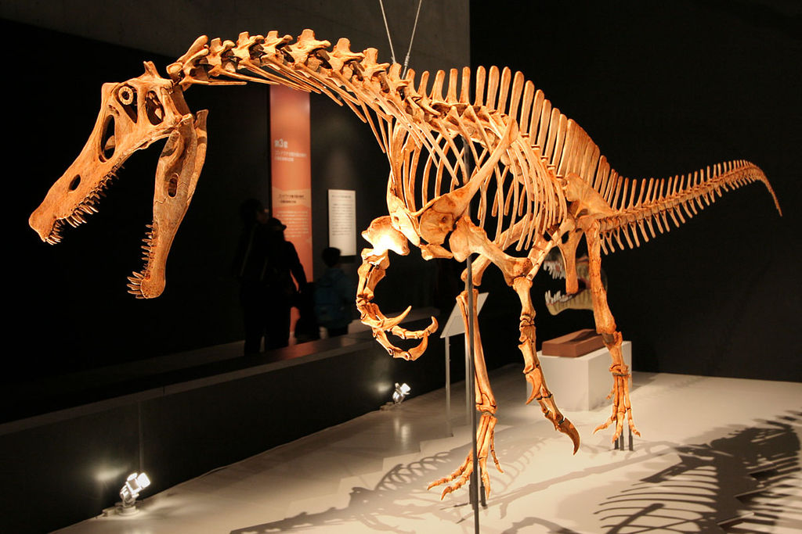

From Wikipedia, the free encyclopedia
Temporal range: Albian ~110 Ma
Reconstructed skeleton at the National Museum of Nature and Science, Tokyo.. The postcranium is based on remains that cannot be confidently attributed to the animal.
For other uses, see Irritation and Wikt:irritate. Irritator is a genus of spinosaurid theropod dinosaur that lived in what is now Brazil during the Albian stage of the Early Cretaceous Period, about 110 million years ago. It is known from a nearly complete skull found in the Romualdo Formation of the Araripe Basin. Fossil dealers had acquired this skull and illegally sold it to the State Museum of Natural History Stuttgart. In 1996, the specimen became the holotype of the type species Irritator challengeri. The genus name comes from the word "irritation", reflecting the feelings of paleontologists who found the skull had been heavily damaged and altered by the collectors. The species name is an homage to the fictional character Professor Challenger from Arthur Conan Doyle's novels. Many paleontologists regard Angaturama limai—known from a snout tip that was described later in 1996—as a potential junior synonym of Irritator. Both animals hail from the same stratigraphic units of the Araripe Basin. It was also previously proposed that Irritator and Angaturama's skull parts belonged to the same specimen. Although this has been cast into doubt, more overlapping fossil material is needed to confirm whether they are the same animal or not. Other spinosaurid skeletal material, some of which could belong to Irritator or Angaturama, was retrieved from the Romualdo Formation, allowing for a replica skeleton to be made and mounted for display at the National Museum of Rio de Janeiro in 2009. Estimated at between 6 and 8 meters (20 and 26 ft) in length, Irritator weighed around 1 tonne (1.1 short tons), making it one of the smallest spinosaurids known. Its long, shallow and slender snout was lined with straight and unserrated conical teeth. Lengthwise atop the head ran a thin sagittal crest, to which powerful neck muscles were likely anchored. The nostrils were positioned far back from the tip of the snout, and a rigid secondary palate on the roof of the mouth would have strengthened the jaw when feeding. Belonging to a subadult, Irritator challengeri's holotype remains the most completely preserved spinosaurid skull yet found. The Angaturama snout tip expanded to the sides in a rosette-like shape, bearing long teeth and an unusually tall crest. One possible skeleton indicates it, like other spinosaurids, had enlarged first-finger claws and a sail running down its back. Irritator had been mistaken initially for a pterosaur, and later a maniraptoran dinosaur. In 1996, the animal was identified as a spinosaurid theropod. The holotype skull was thoroughly prepared before being redescribed in 2002, confirming this classification. Both Irritator and Angaturama belong to the Spinosaurinae subfamily. A generalist diet—like that of today's crocodilians—has been suggested; Irritator might have preyed mainly on fish and any other small prey animals it could catch. Fossil evidence is known of an individual that ate a pterosaur, either from hunting or scavenging it. Irritator may have had semiaquatic habits, and inhabited the tropical environment of a coastal lagoon surrounded by dry regions. It coexisted with other carnivorous theropods as well as turtles, crocodyliforms, and a large number of pterosaur and fish species.